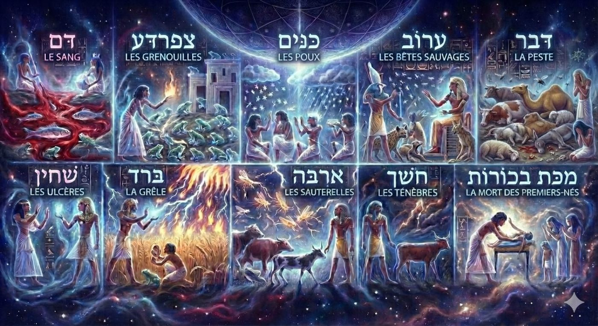
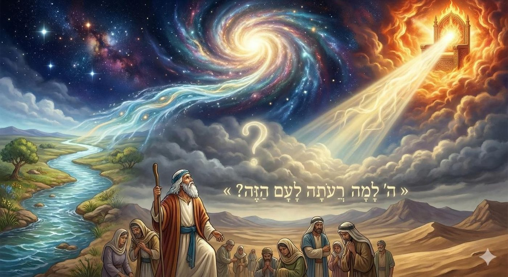
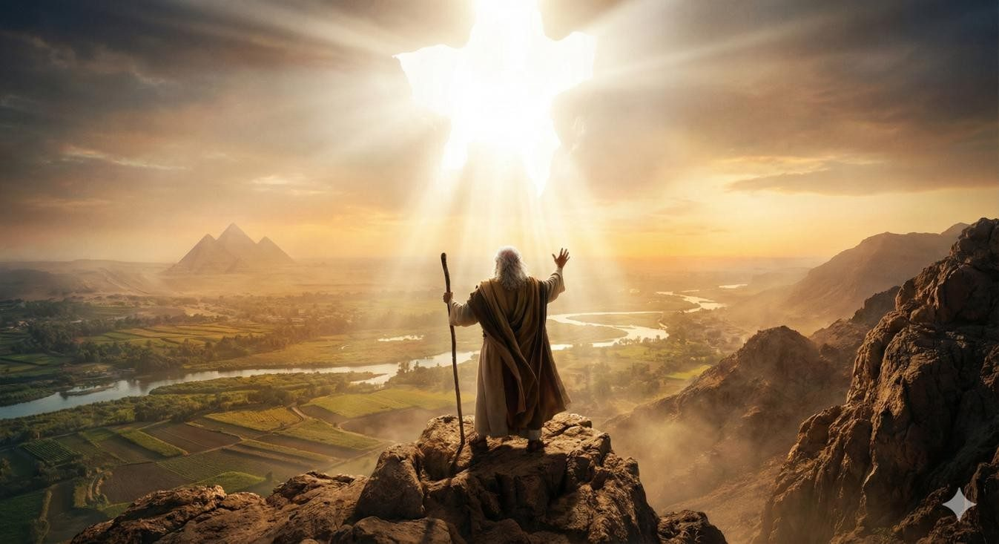
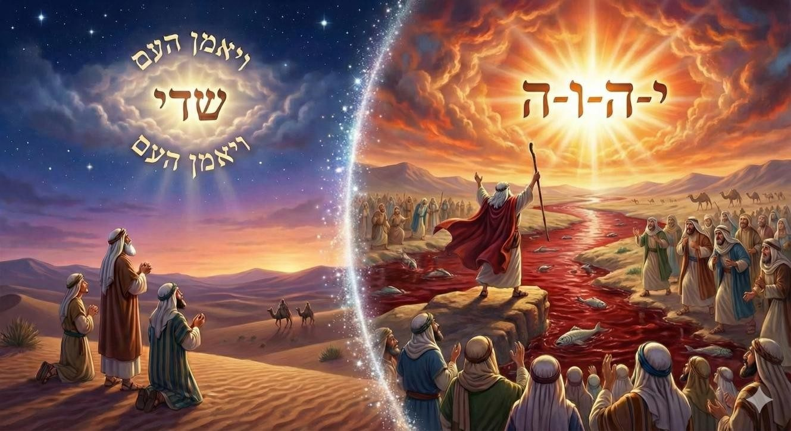
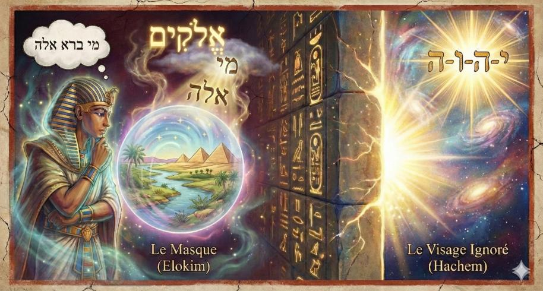
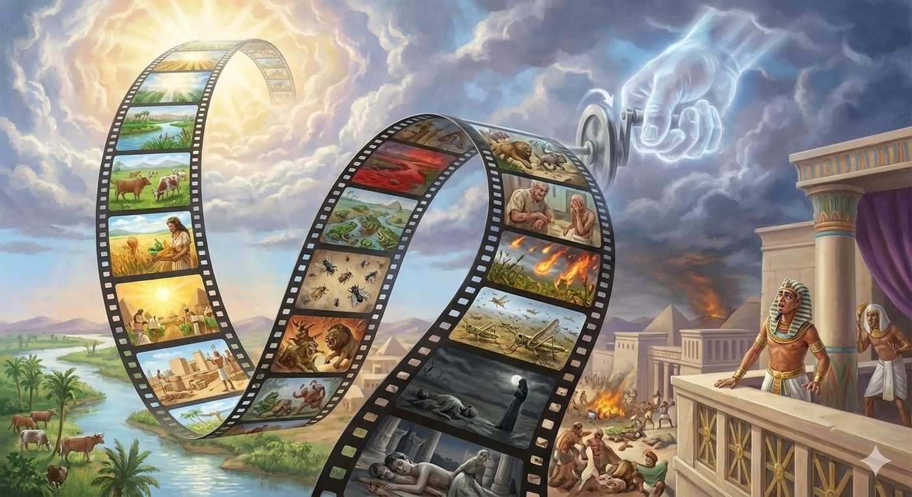
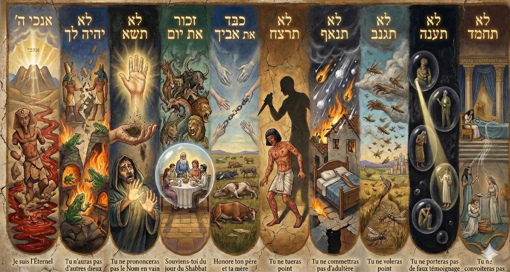
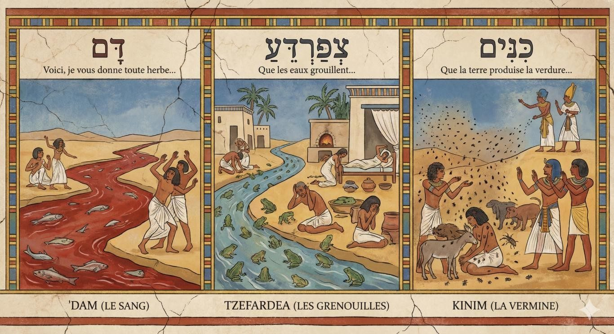
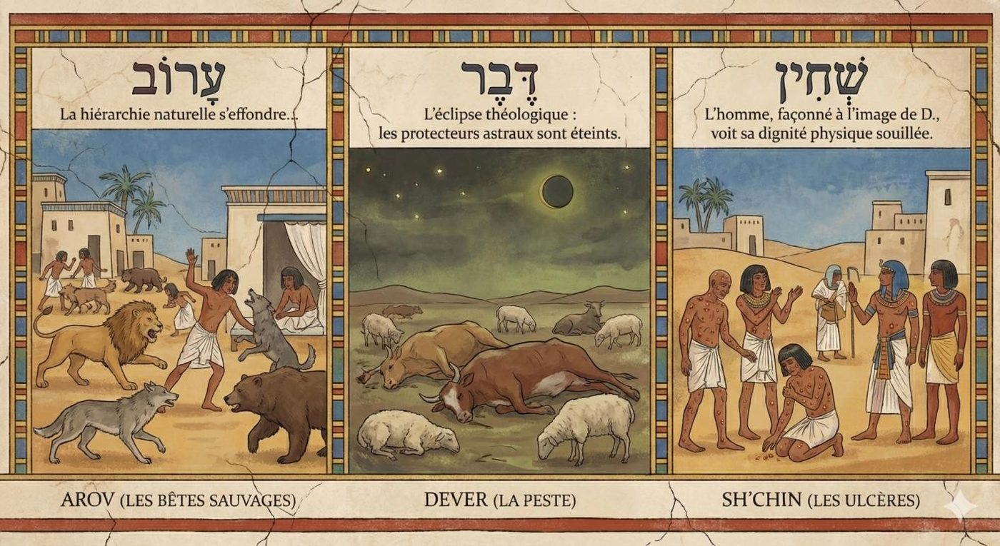
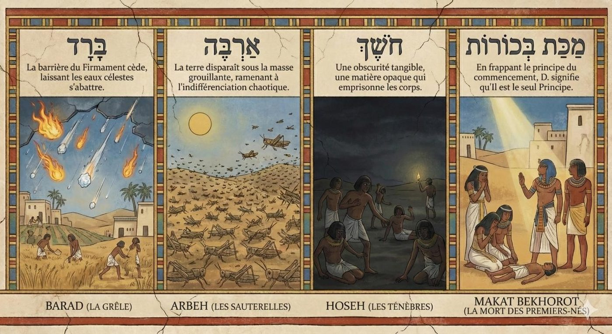

L’Apparition de la Connaissance
Cette étude s’inscrit dans le cadre d’un cycle d’enseignements fondé sur le livre de Chemot 5786. Il est conseillé au lecteur de le lire après avoir pris connaissance de la dialectique fondamentale entre l'immanence et la transcendance divine présenté dans Chemot 5786 (Lien de téléchargement)
L'objectif de ce chiour est de démontrer avec l’aide du Ciel et de nos Maîtres, que les plaies ne furent pas de simples mesures punitives, mais un mécanisme fondamental destiné à prouver l'unité essentielle entre le D. Immanent (Elokim, Créateur, Maître de la Nature et des Dix Paroles de la Création) et le D. Transcendant (Hachem, Rédempteur et Législateur des Dix Commandements).
En nous appuyant sur les textes du Zohar, du Gevourot Hachem du Maharal de Prague, ainsi que sur les chefs-d'œuvre de la pensée hassidique tels que le Torah Or, le Sfat Emet et le Mei HaShiloah, nous explorerons la correspondance métaphysique entre les Dix Paroles, les Dix Plaies et les Dix Commandements.
Cette analyse révélera comment ce processus pédagogique fut conçu pour combler le fossé entre l'ordre naturel perçu (Téva) et la Volonté Divine (Ratzon). Il culmine dans la réalisation suprême que la Puissance qui « remplit tous les mondes » (Memale Kol Almin) est identique à celle qui « entoure tous les mondes » (Sovev Kol Almin), résolvant ainsi la douloureuse dialectique de l'exil.

Dans la section précédente de la Torah, l’obstination prévisible de Pharaon s’est manifestée par un refus catégorique de libérer les Bnei Israël. Pire encore, le tyran a alourdi le joug de la servitude en contraignant les esclaves à glaner eux-mêmes la paille nécessaire à la confection des briques.
Face à la détresse des contremaîtres, Moché porte la plainte du peuple vers D. dans un dialogue empreint d'effroi, formulant une interrogation qui résonne à travers l'éternité des souffrances du peuple d'Israël : “Moïse retourna vers le Seigneur et dit : "Mon D., pourquoi as-tu rendu ce peuple misérable ? Dans quel but m'avais-tu donc envoyé ? Depuis que je me suis présenté à Pharaon pour parler en ton nom, le sort de ce peuple a empiré, et tu n’as toujours pas sauvé ton peuple !"”

L'esprit humain eût sans doute espéré que la Geoula, cette délivrance tant attendue, se manifeste de manière instantanée et éclatante. Nous sommes naturellement enclins à fantasmer une libération exempte d'épreuves, où la souffrance serait abolie par une démonstration foudroyante de la Toute- Puissance, une téléportation miraculeuse du peuple au Mont Sinaï, la construction immédiate du Beth Hamikdach ou la disparition soudaine de Pharaon par une intervention surnaturelle, après tout, rien n'est impossible à D.
Nul n’aurait ainsi pu présager, ni le peuple, ni Moché, ni même le lecteur averti de la Torah, que le processus de la Geoula s’amorcerait par une telle intensification des ténèbres. Contre toute attente, les Bnei Israël furent précipités au paroxysme de la douleur. Les Midrashim décrivent avec effroi cette descente aux enfers où, sous les coups redoublés des maîtres égyptiens, l'horreur alla jusqu'à l'emmurement des enfants pour satisfaire aux quotas de production de briques. Face à ce spectacle insoutenable, Moché, en sa qualité de Tsadik, se fit l’avocat de l'agonie d'Israël, portant devant le Trône Céleste le cri d'incompréhension de tout un peuple.
Nous avons expliqué lors du Chiour précédent que la mission de Moché consistait à révéler un principe fondamental : D. est Unique, bien que nous Le percevions à travers deux modes de conduite apparemment inconciliables.
D'une part, l'Immanence (Hachgah'a Pratite), soit sa présence diffuse dans le monde à travers les cycles immuables de la nature et l'ordre cosmique qui inclut même le règne de Pharaon, sous le vocable de Elo- him. D'autre part, la Transcendance (Hachgah'a Klalite), cet "Autre" absolu, au-delà de l'histoire et de la nature, insaisissable et antérieur à l'univers, sous le vocable du nom ineffable et imprononçable composé des lettres youd, hé, vav, et hé. L’unicité divine est ainsi celle de son agissement simultané au cœur du monde et infiniment au-delà car le D. de la Torah est à la fois le Roi de l'Univers agissant dans une transcendance absolue et le D. de la nature présent intimement pour vivifier chaque atome.
Dans la paracha précédente, les Bnei Israël ont adhéré par croyance et par tradition à l’unité divine présentée par Moché et sa conséquence directe : le démarrage de l’exode vers la terre promise : “Et le peuple crut (Vaya'amen Ha'am). Ils entendirent que Hachem s'était souvenu des Bnei Israël et qu'Il avait vu leur affliction” (Chemot, 4,31).
Mais pour autant nous pouvons aisément imaginer la difficulté de vivre cette croyance alors qu’elle semble être mise à l'échec par un Pharaon qui intensifie son emprise. Alors Moché porte l’interrogation du peuple et démarre l’activation de la démonstration de cette équation fondamentale. Moché active le processus de dévoilement. D. lui signifie alors que la foi des Pères s'articulait autour du nom
Sha-daï. Si cette fréquence spirituelle leur a donné la puissance de marcher dans les ténèbres, elle restait une révélation où le Divin s'imposait une limite, disant à Son monde "Assez" (Daï), sans encore briser les lois de la nature pour la Délivrance absolue.Mais à l'aube de la Geoula, le moment est arrivé de passer de la croyance à la connaissance du nom Hachem et de l’équation fondamentale : l’Éternel est votre D. Ainsi que le précise D. lui-même à Moché quelques versets plus loin : “Je vous prendrai pour Moi comme peuple, et Je serai pour vous un D.; et vous saurez (Vidatem étymologie du daat le savoir) que Je suis l’Eternel, votre D., qui vous fait sortir de sous les fardeaux de l'Égypte. “ (Chemot 6,7).

La clé de voûte de cette unification est présentée dans le Zohar sur la Parachat Vaera. Ce texte sacré s'arrête sur le frisson initial du verset d'ouverture, soulignant une apparente anomalie sémantique : « Et Elokim parla à Moché en lui disant : Je suis Hachem » (Chemot 6:2). Rappelons que dans la grammaire des noms divins, ces désignations ne sont pas interchangeables mais définissent des modalités d'être. Elokim incarne la Rigueur (Din), la conduite naturelle et immanente qui régit les lois du monde, à l'opposé, le Tétragramme, Hachem, souffle le vent de la transcendance et de la miséricorde infinie, au-delà de toute causalité physique.
Le Zohar (Vaera 1,11) observe que la communication débute sous le sceau du Jugement (car le verbe « parler » (Vayedaber) connote la dureté) mais s'épanouit dans la révélation de la Miséricorde absolue : « Je suis Hachem ». Loin d'y voir une incohérence, les maîtres de la mystique y décèlent une « Grande Perfection » (Chlemout Guedolah). C'est l'instant sublime où la Rigueur et la Clémence fusionnent, où le cadre fini de la nature devient le réceptacle de l'infini.
Pour saisir la portée de cette mutation, le Zohar distingue la prophétie de Moché de celle des Patriarches. Aux pères de la nation, Avraham, Yits'hak et Yaakov, le Divin s'était manifesté sous le nom d'El Chaddaï. Ce Nom porte en lui le secret de la limite : « Celui qui a dit à Son monde : Daï ! Assez ! » (Che-amar le- olamo Daï). C'est la Divinité qui trace des frontières, qui œuvre dans l'intimité des lois biologiques pour assurer fertilité et protection. C'est pourquoi les bénédictions patriarcales s'inscrivent dans l'ordre naturel
: la terre, la descendance, la subsistance.
L'heure de la Rédemption appelait une autre lumière car l'esclavage, qui semblait aussi immuable que le cours du Nil, nécessitait une rupture ontologique que seul le Nom Hachem, Celui qui Est, qui Fut et qui Sera, au-delà du temps, pouvait opérer.

L'enseignement du Zohar nous révèle alors la fonction profonde des plaies : elles furent le mécanisme par lequel l'attribut d'El Chaddaï, le monde des limites et de la suffisance, fut contraint de s'ouvrir. Il fallait briser l'écorce du déterminisme pour laisser déferler la lumière incréée (qui existe sans avoir été créée) de Hachem. La déclaration « Je suis Hachem au milieu de la terre » (Chemot, Chapitre 8, verset 18 à l’annonce de la plaie des bêtes sauvages) signifie précisément cela : l'effraction du Surnaturel dans le tissu même du Naturel.
Nos sages nous enseignent que l’exil d'Égypte est un exil de la connaissance, du Daat de l’unité divine. La sortie des Bnei Israël ne saurait donc s'accomplir sans l'acquisition d’une connaissance de l’unicité divine et plus particulièrement de la réunification de Ses noms qu’il faut entendre comme ses moyens d’agir dans le monde (pour simplifier Elokim au travers de la nature, le tétragramme de 4 lettres, de manière surnaturelle).
Le libérateur est donc celui qui enseigne cette unification du Divin, de sa transcendance, c'est-à-dire le fait qu’il est totalement étranger au monde, simultanément de son immanence, le fait qu’il soit totalement intégré dans chaque atome de l’univers. Paradoxalement, cette connaissance ne s’acquiert pas au travers d’un enseignement, ou d’une compilation des savoirs, mais elle s'expérimente, se vit dans les souffrances de l’Égypte.
En effet, le Daat, dans la mystique juive, est une faculté de liaison (comme dans "Adam connut hava"), c’est le pont entre l'intellect abstrait (Keter, Hochmah et Binah) et les attributs (la bonté, la rigueur, l’harmonie, le fondement, l’éternité, la splendeur, et la royauté).
L'exil égyptien est caractérisé par une rupture de ce pont, Pharaon, dont le nom est l'anagramme de Peh- Rah ("Bouche Mauvaise"), incarne en effet l'antithèse du Daat, de la connaissance. Selon le Torah Ohr, il représente la "Grande Nuque" (Oref), l'obstruction qui empêche la lumière de l'esprit de descendre dans le corps. C’est le "Grand Crocodile" qui gît dans le Nil et proclame : "Mon fleuve est à moi, et je me suis fait moi-même" (Ye’hezkel (Ézéchiel), chapitre 29, verset 3 passage tiré de la haftara de Va’era).
Là se trouve l'essence de la déviance égyptienne : non pas une négation de la divinité, mais la négation de la relation, la coupure du Daat de la connaissance qui relie le Créateur à la créature. Ce refus de la divinité absolue transcendante provient d’un état de fait: l’Homme est le grand absent de la Création, et fait partie d’un monde où la présence de D. n’est pas perceptible au premier abord. Il est donc susceptible de refuser la présence d’une volonté divine inaccessible et de n’accepter que ce qu’il voit.
La Cécité de Paro : Voir Elokim et ignorer Hachem
Dans son obstination, Pharaon formule une interrogation qui définit les limites de sa perception spirituelle
:« Mi (Qui) est Hachem ? Je ne Le connais pas ». Ce refus n'est pas un athéisme au sens moderne, le tyran égyptien admet volontiers l'existence d'une force créatrice agissant au travers de la Nature. Il

reconnaît la structure grammaticale du nom Elo-him (-אל הים), qui est la fusion de deux réalités : Mi (מי - l'Interrogateur inconnu, le Sujet caché) et Ele (אלה- Ces choses, le monde tangible et visible).En contemplant l'univers, Pharaon accepte l'équation « Mi bara Élé
» Qui a créé Ces choses, admettant ainsi un D. de la Nature, un architecte lointain enfermé dans les lois du déterminisme. Cependant, il lui est impossible d’accéder à la révélation du Tétragramme : il voit le masque (Elo-him) mais nie le Visage (Hachem).
Comme nous l'avons développé lors de notre étude sur la Parachat Miketz, le pronom אלה Elé gematria
36 ne désigne pas seulement la matière inerte mais c’est le doigt pointé vers la Présence Divine immanente, cette lumière cachée qui anime le monde. C'est précisément ce secret que Yossef avait commencé à dévoiler en Égypte : la capacité de percevoir les trente-six lumières, celles-là mêmes que nous allumons à Hanouka, au cœur de l'obscurité de l'exil.
Le drame de l'Égypte réside dans cette tension : là où Yossef révélait que « ces choses » (Ele) sont remplies de divin, Pharaon s'emploie à oublier Yossef, à opacifier le monde, à épaissir l'écorce pour cacher la lumière, enfermant le divin dans la rigueur de la nature et refusant la main tendue de la Transcendance.
Pour pouvoir répondre à cette problématique, Moché va devoir démontrer que “Hachem est Elo-him” ce qu’il faut entendre dans un premier temps comme : “Hachem est le créateur du monde” non pas au passé : il a certes créé le monde il y a 5 786 années mais à l’infinitif (passé, présent, et futur ainsi que décrit par le nom ineffable de D.) : il crée le monde à chaque instant. La rédemption exige donc une "chirurgie" cosmique : les Dix Plaies ne sont alors pas simplement des punitions vindicatives d’un D. vengeur de son peuple martyrisé, mais des contre-forces précises destinées à briser les couches de voilement posées par les Dix Paroles de la Création et, en réalité, à démontrer que D. peut à sa guise et selon Sa Volonté recréer le monde.
Le Maharal de Prague, dans son ouvrage Gevurot Hashem (chapitres 57 et suivants), offre une analyse pénétrante de la relation entre les dix paroles de la Création et les dix Plaies. Sa thèse révolutionnaire est que les plaies ne sont pas une série aléatoire de catastrophes écologiques, mais une inversion méthodique et précise de l'ordre cosmologique. Si la Création est un processus de construction (du chaos vers l'ordre, du simple au complexe), les Plaies sont un processus de déconstruction (de l'ordre vers le chaos). D. "rembobine" le film de la création pour montrer à Pharaon, qui se prétendait maître du Nil et d.ieu sur terre, qu'il n'a aucun contrôle sur les briques élémentaires de la réalité.

Ainsi le monde fut bâti par dix paroles de majesté, et l'exil égyptien fut brisé par dix coups de rigueur. Le principe est canonisé dans la Mishna, au traité Pirkei Avot (Chapitre 5, Mishna 1) :
« Le monde a été créé par dix paroles (Baassara Maamarot). Que vient nous apprendre cela, puisque D. aurait pu le créer par une seule parole ? C'est pour punir les méchants qui détruisent le monde créé par dix paroles, et pour donner un bon salaire aux justes qui soutiennent le monde créé par dix paroles.1 »
D. démonte ainsi, pièce par pièce, l'édifice naturel qu'Il a Lui-même érigé par ces dix paroles, forçant ainsi la conscience de Pharaon et des Bnei Israël à remonter du Téva (la nature) vers le Créateur. Cf pour aller plus loin pour analyser la correspondance entre ces deux thèmes.
Si la Création est un processus de construction en 10 paroles (du chaos vers l'ordre, du simple au complexe), les 10 Plaies sont un processus de déconstruction (de l'ordre vers le chaos) et elles donneront naissance à 10 commandements qui soutiennent le monde qui feront de l’homme le grand absent de l’histoire au démarrage, l’associé conscient (remplie de Daat) du créateur.
C’est dans ce sens qu’il faut reboucler sur la finalité de la sortie d’Égypte : servir le créateur en toute connaissance. Le Midrash Pessikta Rabbati (chap. 21) l’affirme en toutes lettres : « Les dix Commandements ont été énoncés en correspondance aux dix plaies que le Saint béni soit-Il a infligées aux Égyptiens ». Autrement dit, chaque plaie est consubstantielle d’un principe des Dix commandements, soit par opposition soit par association d’idées. Cf. pour aller plus loin pour analyser cette correspondance.

Mais il me semble qu’il y a une nuance, importante car nécessaire à la compréhension de nos vies.
En réalité, D. accorde à l'homme toute latitude pour choisir d'être libre, c'est-à-dire d'accéder à la conscience de D. et de Sa Loi. La sortie d'Égypte est une proposition, non une imposition, il ne s'agit pas de contraindre la Créature à accepter Sa Création. Sinon, comme expliqué au début du cours,
1 Toutefois, le lecteur attentif du premier chapitre de la Genèse pourrait s'étonner : l'expression « Et D. dit » (Vayomer) n'y figure explicitement qu'à neuf reprises. Le Talmud, dans les traités Roch Hachana (32a) et Meguila (21b), résout cette énigme arithmétique et mystique. Nos Sages enseignent que le terme inaugural « Bereshit » (Au commencement) constitue lui-même une Parole (Maamar), car il est écrit dans les psaumes (33:6) : « Par la parole de Hachem les cieux ont été faits ». Le silence primordial de la fondation est donc, lui aussi, une Parole.
D. aurait pu nous téléporter sans difficulté à Jérusalem2, le Temple déjà reconstruit, ou, comme le mentionne mieux Pirké Avot, D. aurait pu créer le monde par une seule parole (et je poursuis l'idée de Pirké Avot), frapper l'Égypte d'un unique grand coup pour nous transmettre un unique Loi : “Je suis l’Eternel ton D. qui t’a fait sortir d’Egypte”.
À cet égard, les plaies sont matérialisées et pourraient même recevoir une explication "naturelle"3, non pas pour minimiser la puissance du Créateur, à D. ne plaise, mais pour démontrer que le miracle doit s'inscrire dans le cours naturel des choses afin d'être appréhendé mentalement par les Bnei Israël et l'Égypte, car l'homme doit progressivement prendre conscience de la présence de D. et de Son unicité dans le monde.
Le vertige est d'autant plus grand que les Sages nous enseignent que les dix paroles créatrices, les dix plaies et les dix commandements sont identiques et forment une continuité invariante.
Le signal divin émis depuis Berechit a toujours été constant, seule l'humanité était absente (à Berechit), partiellement présente (en Égypte), ou bien totalement présente (au Sinaï). Si D. cessait d'exprimer un instant, les dix paroles créatrices, à D. ne plaise, le monde s'effondrerait et si nous étions suffisamment méritants pour atteindre le niveau de conscience escompté, nous serions en mesure d'entendre et de percevoir cette révélation.
C'est là toute l'essence de la mémoire juive cristallisée dans la liturgie de Pessa'h. Lorsque la Haggadah proclame « Nous étions esclaves de Pharaon en Égypte » (Avadim Hayinou..), elle ne fait pas qu'évoquer un passé révolu, elle souligne notre statut actuel. Sommes-nous encore sous l’emprise de Pharaon, qui nous empêche de comprendre l’unité divine ? Ou bien avons-nous été partiellement ou totalement libérés du tyran prêt à nous soumettre à l'Infini.
Isaïe (5:13) : « C'est pourquoi mon peuple a été exilé, par manque de connaissance (Mibli Daat) ... »
Yehi Ratson, que soit la volonté du Ciel,
Que nous puissions obtenir la connaissance de D.
Et que nous soyons comptés parmi ceux qui soutiennent le monde créé par les Dix Paroles, en vivant libéré dans la conscience de l'Unité Divine.
2 Cette exemple n’est pas fortuit car un midrash explique que cela s’est passé ainsi pour pouvoir réaliser le sacrifice du korban pessah, étant impossible de sacrifier cet agneau en dehors du temple, D. a téléporté dans le temps et dans l’espace les bnei israël pour pouvoir sacrifier l’agneau avant de les renvoyer en Egypte !!
3 hormis le timing juste et parfait qui envoie les plaies au bon moment au bon endroit ( voir le Ramban, Don Isaac Abravanel sur la paracha et la suivante qui vont dans ce sens),
Synthèse
L'étude de notre Paracha, Va’era, nous révèle une vérité fondamentale qui transcende le simple récit de l'Exode : la délivrance d'Égypte fut, avant tout, une pédagogie divine visant à graver dans la conscience d'Israël l'Unité absolue du Créateur.
L'Exil (Mitzrayim) n'est pas seulement un asservissement physique, mais une crise de la perception divine. Le monde est tiraillé entre l'Immanence, cette Présence diffuse sous le nom d'Elo-him (le Maître de la Nature et des lois immuables que Pharaon acceptait), et la Transcendance, cet "Autre" absolu connu sous le Nom ineffable d'Hachem (le Rédempteur, le Maître de l'Histoire). La mission de Moché, c'est d'opérer la fusion de ces deux modes dans une Chlemout Guedolah (Grande Perfection), l'instant sublime où la Rigueur et la Clémence ne font qu'un.
C'est là le passage crucial : quitter la simple Croyance (Emouna), qui était l'apanage des Patriarches sous le Nom d'El Shaddaï (le d.ieu de la limite), pour accéder à la Connaissance (Daat) de l’unité divine. Ce Daat est la faculté de liaison qui connecte l'intellect à la vie, et que Pharaon, la "Bouche Mauvaise", s'efforçait de couper. La sortie d'Égypte n'est accomplie que lorsque, par l'expérience, « vous saurez que Je suis l’Éternel, votre D. ».
Pour réaliser cette connaissance, D. a orchestré une chirurgie cosmique : les Dix Plaies. Elles ne furent pas des punitions gratuites, mais un mécanisme précis destiné à briser le voilement (Klipah) du déterminisme égyptien. Suivant la thèse du Maharal de Prague, ces plaies sont une déconstruction méthodique et inverse des Dix Paroles de la Création. D. "rembobine le film" de l'univers, annulant une par une Ses propres Paroles créatrices pour montrer à Pharaon qu'Il recrée le monde à chaque instant et qu'Il Seul en détient le contrôle. De Dam (Sang) attaquant la subsistance (10e Parole) jusqu'à Makat Bekhorot (Mort des Premiers-nés) frappant le Berechit (1e Parole), l'édifice naturel s'effondre.
Ce retour au chaos n'est cependant pas une fin, mais une fondation. En réduisant au silence l'orgueil du déterminisme matériel, le Créateur dégage l'espace nécessaire pour que résonnent les Dix Commandements, révélant que la Loi morale est le véritable pilier qui soutient l'univers. L'homme, absent lors de la Création originelle, est convoqué au Sinaï pour devenir l'associé conscient de D. La véritable liberté acquise à la sortie d'Égypte n'est donc pas seulement l'affranchissement d'un joug, mais l'adhésion lucide à cette Unité retrouvée : savoir enfin que la puissance infinie qui transcende les mondes est celle- là même qui, dans l'intimité de chaque instant, nous fait exister.
Pour aller plus loin : La déconstruction des 10 paroles s’opère par les 10
plaies et donnent naissance à 10 commandements
Le cycle de déconstruction s'ouvre par Dam (Le Sang), une attaque frontale contre la dixième parole de la Création, celle qui garantissait la subsistance (« Voici, je vous donne toute herbe...»). Le Nil, artère vitale et déité de l'Égypte, se voit corrompu dans son essence même. Là où la parole divine avait offert l'eau et la vie comme don gratuit, la plaie transforme le fluide nourricier en fluide de mort. C'est l'économie divine de la subsistance qui est ici renversée : le Créateur reprend ce qu'Il a donné, signifiant que la vie ne tient qu'à Sa volonté.
Pharaon, dans sa démesure, proclamait : « Le fleuve est à moi, c’est moi qui l’ai fait. ». Il s’érigeait en créateur, usurpant la place du Divin. En changeant l’eau en sang, l’Éternel expose la fragilité de cette prétention. Le sang, essence de la vie, devient accusation. Cette première frappe est une réfutation cosmique de l’ego humain : l’homme n’est pas sa propre source. Elle prépare les cœurs à la première vérité du Sinaï : il n’y a qu’un seul Créateur, et nul ne peut s’arroger sa souveraineté.

Puis surgit Tzefardea (Les Grenouilles), qui vient subvertir (bouleverser) la septième parole ordonnant le foisonnement de la vie aquatique (« Que les eaux grouillent... »). La bénédiction originelle de fertilité se mue en une malédiction de prolifération anarchique. En envahissant les fours et les lits, les batraciens violent la frontière écologique sacrée qui séparait l'élément liquide de la terre ferme. La nature, jadis harmonieuse, ne respecte plus ses limites assignées.
Les Égyptiens servaient une multitude d’idoles, mais aucune ne put les sauver de la marée amphibienne. Le Midrash nous offre une image saisissante : les grenouilles, simples créatures, se jetèrent dans les fours ardents pour obéir à l’injonction divine. Elles témoignèrent, par leur sacrifice, d’une soumission que les hommes refusaient à d.ieu. Ce contraste flagrant enseigne qu’aucune idole ne protège et que seule la fidélité à l’Unique importe, essence même du second commandement.
en vain »
Avec Kinim (La Vermine), c'est la cinquième parole (« Que la terre produise la verdure... ») qui est prise à témoin. La terre, mandatée pour enfanter une végétation nourrissante, trahit sa fonction pour générer une irritation parasitaire. La poussière du sol, matrice de vie, devient source de tourment. Devant cette corruption de la force génératrice où l'inerte engendre le vivant, les magiciens de Pharaon, impuissants, sont contraints d’accepter le « Doigt de D. ».
Face à cette "poussière vivante", les sorciers capitulent : « C’est le doigt de d.ieu ! » La tradition raconte que d.ieu fit jurer (sheshiv'an) aux poux d’envahir les corps. Si une créature minuscule respecte son serment, comment l’homme oserait-il profaner le Nom divin par un parjure ? La démangeaison physique de la plaie rappelle la brûlure morale du mensonge sacré. Prononcer le Nom en vain, c’est nier la Présence qui se manifeste jusque dans la poussière.

Le désordre s'amplifie avec Arov (Les Bêtes Sauvages), qui fracture l'ordre établi par la huitième parole concernant les animaux terrestres. La hiérarchie naturelle, qui place la faune sauvage à distance des cités humaines, s'effondre. La nature envahit l'espace civilisé, marquant un retour à une prédation primitive où l'homme, dépouillé de sa superbe, perd son statut de couronne de la création face à la bestialité déchaînée.
Le mot Arov signifie mélange, confusion. C’est le règne de l’indistinction, où la nature retourne au chaos primitif. Le Midrash y voit l’antithèse absolue du Shabbat. Si le quatrième commandement nous demande de distinguer le sacré du profane, le septième jour des six autres, la quatrième plaie nous montre l’horreur d’un monde sans frontières, sans ordre, sans repos sanctifié. La bête sauvage règne là où le temps n’est pas sanctifié.
se prolongent »
La cinquième plaie, Dever (La Peste), s'élève vers les cieux pour contredire la sixième parole, celle des luminaires célestes. Selon le Maharal, puisque les astres régulent les temps et les climats influençant la santé des corps, leur dérèglement engendre l'épidémie. Plus symboliquement, la mort du bétail égyptien sonne le glas des divinités stellaires que ce peuple vénérait. C'est une éclipse théologique : les protecteurs astraux sont éteints.
Le cinquième commandement promet la vie à celui qui honore ses parents, la cinquième plaie apporte la mort de la subsistance. En traitant les enfants d’Israël, appelés « fils premier-né » de D., avec cruauté, les Égyptiens ont bafoué le principe de filiation et de respect. Le bétail, garant de leur subsistance et de leur avenir, périt. C’est une leçon sur la continuité : celui qui méprise ses racines (parents) ou la paternité divine voit ses propres ressources s’effondrer, abrégeant ainsi ses jours.
L’ulcère est une violence faite au corps, une corruption du sang qui reste à l’intérieur sans s’écouler. Le Midrash murmure : « Ne sois pas meurtrier, laissant le sang de ta victime encore en lui. » La souffrance infligée par les ulcères est un écho de la violence meurtrière. Avant même l’acte irréversible de tuer, l’atteinte à l’intégrité physique de l’autre est une abomination. La maladie de la peau reflète la maladie de l’âme qui ne respecte pas le sanctuaire de la vie humaine.
L'atteinte devient intime avec Sh'chin (Les Ulcères). Ici, la neuvième parole (« Faisons l'homme... ») est visée. L'homme, façonné à l'image de D. (Tzelem Elokim), voit sa dignité physique et son intégrité souillées. Les ulcères rendent le corps impur et repoussant, à tel point que les sorciers ne peuvent même plus « se tenir devant Moché ». C'est la déchéance de la superbe humaine face à la Sainteté.
La violence monte encore d'un degré avec Barad (La Grêle), qui fracasse la troisième parole créatrice : l'instauration du Firmament (Rakia) destiné à séparer les eaux d'en haut de celles d'en bas. Cette barrière cède, laissant les eaux célestes s'abattre sous forme de glace destructrice. Miracle dans le miracle, le feu brûle à l'intérieur de la grêle, violant les lois physiques pour montrer que le Maître du Monde peut fusionner les contraires (l'eau et le feu) dans une harmonie destructrice.
Le prodige était double : l’eau et le feu, ennemis naturels, firent la paix pour frapper l’Égypte. Cette union contre-nature est comparée par les Sages à la passion adultère. « Peut-on mettre du feu dans son giron sans se brûler ? » (Proverbes). L’adultère est ce mélange destructeur, cette alliance interdite qui, comme la grêle enflammée, ravage la maison et la récolte. La fidélité conjugale est la digue qui protège le monde de cet orage dévastateur.
Vient ensuite Arbeh (Les Sauterelles), obscurcissant la quatrième parole qui avait permis à la terre sèche d'apparaître (« Que le sec paraisse »). L'invasion est si totale qu'elle couvre « l’œil de la terre ». La distinction et la visibilité du sol sont abolies, ramenant la surface du monde à une indifférenciation chaotique où la terre disparaît sous la masse grouillante.
Telles une armée de pillards, les sauterelles s’emparent du labeur d’autrui. Elles incarnent le vol total, ne laissant rien derrière elles. La Torah enseigne : « Ce que Je t’ai donné est à toi ; n’usurpe pas autrui. » La huitième plaie matérialise la laideur de la rapine. Elle montre qu’une société fondée sur l’exploitation et le vol finit par être elle-même dépouillée, nue et affamée, comme la terre d’Égypte après le passage de l’essaim.
Les Ténèbres et la Lumière de la Vérité en regard du Commandement : « Tu ne porteras pas de faux témoignage »
L'avant-dernière étape, Hoseh (Les Ténèbres), annule la toute première distinction de l'univers, celle de la deuxième parole : « Que la lumière soit ». L'Égypte régresse vers le Tohu Bohu primordial. Le Midrash nous enseigne qu'il ne s'agissait pas d'une simple absence de photons, mais d'une obscurité tangible, une matière opaque qui emprisonnait les corps, niant la libération qu'avait jadis apportée la lumière originelle.
Le mensonge est un voile ; le faux témoignage obscurcit la justice. Le Midrash avertit : « Si ton témoignage n’est pas clair comme la lumière, abstiens-toi. » Durant trois jours, nul ne put voir son frère. C’est là l’effet social du mensonge : il rompt le lien, isole l’homme et plonge la cité dans les ténèbres morales. La neuvième plaie est la manifestation physique de l’aveuglement causé par la duplicité.
La Mort des Premiers-nés en regard du commandement : « Tu ne convoiteras pas… la femme de ton prochain »
Enfin, le cycle s'achève par Makat Bekhorot (La Mort des Premiers-nés). C'est l'attaque ultime contre le Bereshit, la première parole, le Commencement absolu. Le Bekhor, incarnation de la première vigueur et de l'avenir social, est fauché. En frappant le principe même du commencement dans chaque foyer égyptien, D. signifie qu'Il est le seul et unique Principe. La boucle est bouclée : l'origine de l'Égypte est détruite pour permettre la naissance d'Israël.
La tradition rapporte une terrible réalité : la débauche égyptienne était telle que les lignées étaient confuses. Dans une seule maison, plusieurs pouvaient mourir, car ils étaient les premiers-nés biologiques de pères différents, fruits d’adultères et de convoitises cachées. La dixième plaie lève le voile sur la dixième parole : la convoitise est la racine du désastre. Désirer ce qui appartient à l’autre engendre le chaos généalogique et la mort. La libération finale exigeait la purification de ces désirs.

S. Mandé, le 20 Tevet 5786 rédigé par B.A. Toute réflexion peut être adressée avec joie sur le mail. Les chiourims se trouvent sur les liens :
|
|---|
Plan du Chiour
De la Croyance à la Connaissance La Crise de l'Exil et le Rôle de Moché :
L'intensification de la servitude égyptienne face à la Geoula.
La mission : révéler l'unité entre l'Immanence (Elo-him, Maître de la Nature) et la Transcendence (Hachem, Maître de l'Histoire). Le passage de la Croyance (Emouna), associée au Nom El Shaddaï, à la Connaissance (Daat) du Nom Hachem et de la Chlemout Guedolah (Grande Perfection).
Reconnaître le Créateur : La Déconstruction Cosmique
La Cécité de Pharaon :
Refus du Daat ; acceptation d'Elo-him (créateur des choses tangibles) mais négation d'Hachem (le Dieu libre et historique).
L'enjeu : démontrer qu'Hachem est Elo-him, qu'Il recrée le monde à chaque instant.
L’homme est libre de prendre conscience de la loi du
Créateur
Thèse du Maharal de Prague : les Dix Plaies sont une déconstruction méthodique et inverse des Dix Paroles de la Création.
Elles brisent le déterminisme pour forcer la remontée du Teva (nature) vers le Créateur.
Explications des 10 plaies en regard des 10 paroles créatrices
Le niveau de Daat comme étalon du niveau de liberté
📚 Sources
Le Livre (Houmach / Tanakh)
Genèse (Bereishit) :
1:1 - Elo-him et la nature
46:3,4 - Shekhina descend en exil
50:24,25 - code « Pakod yifkod » de Yossef Exode (Shemot) :
3:13,16 - Ehyeh / Nom + « Pakod pakadti » 4:1,17 - signes + bouche lourde
5:1,2 - Pharaon refuse l’Eternel
6:7 - « vous saurez... » (Connaissance/Daat) 6:10,12 - « lèvres fermées » / parole entravée
8:19 - « Je distinguerai entre mon peuple et ton peuple » (Haflaya)
20:1 - parole divine au Sinaï Lévitique (Vayikra) :
25:55 - « Car les Bnei Israël sont pour Moi des serviteurs... »
Deutéronome (Devarim) :
4:39 - unité Eternel = Elo-him 6:4 - Chema : union des Noms
Prophètes et Hagiographes :
Ye’hezkel (Ézéchiel) 29:3 - Citation de Pharaon : « Mon fleuve est à moi, et je me suis fait moi-même » Psaumes 33:6 - « Par la parole de Hachem les cieux ont été faits »
Psaumes 39:3 - mutisme / retenue de parole Proverbes - « Peut-on mettre du feu dans son giron sans se brûler ? »
II. Littérature Rabbinique et Mystique Mishna :
Pirkei Avot (Chapitre 5, Mishna 1) - Le monde créé par dix paroles.
Talmud Bavli :
Roch Hachana 32a - Explication des Dix Paroles (Bereshit comme Parole).
Meguila 21b - Explication des Dix Paroles (Bereshit comme Parole).
Berakhot 9b - Ehyeh : présence dans les souffrances.
Sotah 13a - Serah + ossements de Yossef. Kiddouchin 22b - Principe : « Ils sont Mes serviteurs, et non des serviteurs de serviteurs ».
Midrash :
Midrash Pessikta Rabbati (chap. 21) - Correspondance entre les Dix Plaies et les Dix Commandements.
Zohar, haddisout et pensée juive :
Zohar (Parachat Vaera 1,11) - L'unification d'Elokim et Hachem (Chlemout Guedolah).
Maharal de Prague (Gevurot Hashem, chapitres 57 et suivants) - Thèse de la déconstruction des Dix Paroles.
Torah Or - Pharaon représente la "Grande Nuque" (Oref), l'obstruction au Daat.
Sfat Emet et Chem Michmouel - Explication de « vider l'Égypte » comme l'extraction des puissances spirituelles.